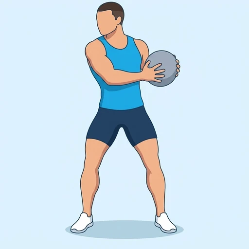
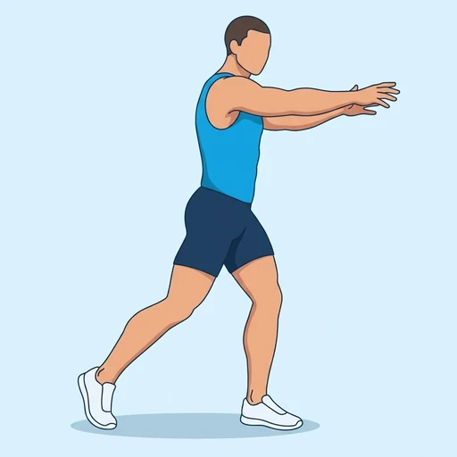
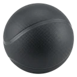

Medicine Ball Side Throw
A rotational power exercise: standing side-on with a medicine ball held at your hip, you turn your hips and torso and throw the ball out to the side with both hands. The obliques and the rest of the trunk turn the body, and the hips start the rotation.
Core · Medicine Ball · Beginner


Muscles worked by the Medicine Ball Side Throw
Primary
Secondary
Also called: oblique, obliques, side abs, external oblique, internal oblique.
Equipment

Medicine BallAlso called: med ball, exercise ball (weighted), dynamax ball, soft medicine ball.
How to do the Medicine Ball Side Throw
- Stand with your feet a little wider than shoulder-width, holding a medicine ball with both hands in front of your torso.
- Turn your torso and the ball toward your back hip, bending your knees slightly and keeping your chest up.
- Start the throw by turning your back hip forward and pivoting on the ball of your back foot.
- Let your torso and arms follow, throwing the ball out to the side with both hands.
- Finish facing the direction of the throw with your arms extended.
- Retrieve the ball, reset, and repeat for the planned repetitions, then switch sides.
Form tips
- Start the throw from the hips, not the arms; the trunk and arms should follow the hip turn.
- Throw explosively, but keep your back neutral as you rotate rather than bending sideways.
- Use a ball light enough to throw fast; a heavy ball slows the rotation and turns it into a push.
At a glance
| Body part | Core |
|---|---|
| Category | Strength |
| Force type | Dynamic |
| Mechanic | Compound |
| Difficulty | Beginner |
| Equipment | Medicine Ball |
| Goals | Power, Core |
| Tags | Core, Core focus, Ballistic |
| MET | 6.0 (metabolic equivalent, for calorie estimates) |
| Unilateral | Yes |
| Bodyweight | No |
| Dataset id | medicine-ball-side-throw |
Medicine Ball Side Throw in German & Spanish
| German | Medizinball-Seitwurf |
|---|---|
| Spanish | Lanzamiento Lateral con Balón Medicinal |
Descriptions, instructions and tips ship in all three languages in the JSON.
Related exercises
Exercise data (JSON)
The record below is exactly what exercises.json ships for this exercise — names, descriptions, instructions and tips in English, German and Spanish.
{
"id": "medicine-ball-side-throw",
"name_en": "Medicine Ball Side Throw",
"name_de": "Medizinball-Seitwurf",
"name_es": "Lanzamiento Lateral con Balón Medicinal",
"description_en": "A rotational power exercise: standing side-on with a medicine ball held at your hip, you turn your hips and torso and throw the ball out to the side with both hands. The obliques and the rest of the trunk turn the body, and the hips start the rotation.",
"description_de": "Eine Rotationsübung für Schnellkraft: Seitlich zur Wurfrichtung stehend, den Medizinball an der Hüfte, drehst du Hüfte und Oberkörper und wirfst den Ball mit beiden Händen zur Seite. Die schrägen Bauchmuskeln und der übrige Rumpf drehen den Körper, und die Hüfte leitet die Rotation ein.",
"description_es": "Un ejercicio de potencia rotacional: de pie y de lado, con un balón medicinal sujeto a la altura de la cadera, giras las caderas y el torso y lanzas el balón hacia un lado con ambas manos. Los oblicuos y el resto del tronco giran el cuerpo, y las caderas inician la rotación.",
"category": "strength",
"force_type": "dynamic",
"mechanic": "compound",
"difficulty": "beginner",
"equipment": "medicine_ball",
"body_part": "core",
"primary_muscles": [
"obliques"
],
"secondary_muscles": [
"anterior_deltoid",
"gluteus_maximus",
"pectoralis_major",
"rectus_abdominis"
],
"goals": [
"power",
"core"
],
"tags": [
"core",
"core_focus",
"ballistic"
],
"variation_group": "ball-slam",
"is_unilateral": true,
"is_bodyweight": false,
"instructions_en": [
"Stand with your feet a little wider than shoulder-width, holding a medicine ball with both hands in front of your torso.",
"Turn your torso and the ball toward your back hip, bending your knees slightly and keeping your chest up.",
"Start the throw by turning your back hip forward and pivoting on the ball of your back foot.",
"Let your torso and arms follow, throwing the ball out to the side with both hands.",
"Finish facing the direction of the throw with your arms extended.",
"Retrieve the ball, reset, and repeat for the planned repetitions, then switch sides."
],
"instructions_de": [
"Stelle dich etwas weiter als schulterbreit hin und halte einen Medizinball mit beiden Händen vor dem Oberkörper.",
"Drehe Oberkörper und Ball zur hinteren Hüfte, beuge die Knie leicht und halte die Brust oben.",
"Leite den Wurf ein, indem du die hintere Hüfte nach vorn drehst und den hinteren Fuß auf dem Ballen eindrehst.",
"Lass Oberkörper und Arme folgen und wirf den Ball mit beiden Händen zur Seite.",
"Beende die Bewegung mit Blick in Wurfrichtung und gestreckten Armen.",
"Hole den Ball, nimm die Ausgangsposition wieder ein und wiederhole für die geplante Anzahl an Wiederholungen, wechsle dann die Seite."
],
"instructions_es": [
"Ponte de pie con los pies algo más separados que el ancho de los hombros, sujetando un balón medicinal con ambas manos delante del torso.",
"Gira el torso y el balón hacia la cadera trasera, flexionando ligeramente las rodillas y manteniendo el pecho alto.",
"Inicia el lanzamiento girando la cadera trasera hacia delante y pivotando sobre el metatarso del pie trasero.",
"Deja que el torso y los brazos sigan el movimiento y lanza el balón hacia un lado con ambas manos.",
"Termina de cara a la dirección del lanzamiento con los brazos extendidos.",
"Recupera el balón, vuelve a colocarte y repite el número de repeticiones previsto; luego cambia de lado."
],
"tips_en": [
"Start the throw from the hips, not the arms; the trunk and arms should follow the hip turn.",
"Throw explosively, but keep your back neutral as you rotate rather than bending sideways.",
"Use a ball light enough to throw fast; a heavy ball slows the rotation and turns it into a push."
],
"tips_de": [
"Leite den Wurf aus der Hüfte ein, nicht aus den Armen; Rumpf und Arme sollten der Hüftdrehung folgen.",
"Wirf explosiv, halte den Rücken beim Drehen aber neutral, statt dich seitlich zu beugen.",
"Verwende einen Ball, der leicht genug ist, um ihn schnell zu werfen; ein schwerer Ball bremst die Rotation und macht aus dem Wurf ein Stoßen."
],
"tips_es": [
"Inicia el lanzamiento desde las caderas, no desde los brazos; el tronco y los brazos deben seguir el giro de la cadera.",
"Lanza de forma explosiva, pero mantén la espalda neutra mientras giras, en lugar de inclinarte hacia un lado.",
"Usa un balón lo bastante ligero para lanzarlo rápido; un balón pesado ralentiza la rotación y la convierte en un empuje."
],
"met": 6.0,
"images": {
"flat": {
"start": "images/flat/medicine-ball-side-throw-start.webp",
"peak": "images/flat/medicine-ball-side-throw-peak.webp"
}
}
}Fetch just this exercise
const { exercises } = await fetch(
"https://exercise-dataset.com/exercises.json"
).then(r => r.json());
const ex = exercises.find(e => e.id === "medicine-ball-side-throw");Free for personal and commercial in-app use with attribution (“Exercise data by RepDB”) — see the license and ready-made attribution snippets. Redistributing the data as a dataset or API is not permitted.